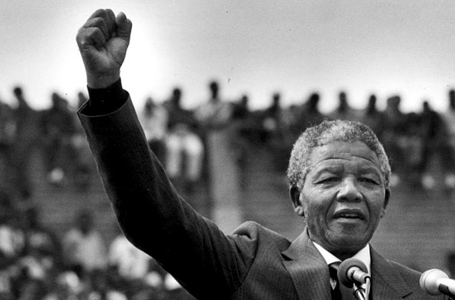

Nelson Mandela (1918-2013) foi presidente da África do Sul. Foi o líder do movimento contra o Apartheid - legislação que segregava os negros no país. Condenado em 1964 à prisão perpetua foi libertado em 1990 depois de grande pressão internacional. Recebeu o “Prêmio Nobel da Paz”, em dezembro de 1993, por sua luta contra o regime de segregação racia
Nelson Mandela nasceu em Mzevo, África do Sul, no dia 18 de julho de 1918. Foi um dos treze filhos de Nkosi Mandela. chefe do povo Thembu com sua terceira mulher, Noqaphi Nosekeni. Descendente de uma família de nobreza tribal, da etnia Xhosa, e membro do clá Madiba. recebeu o nome de Rolihiahia Dalibhunga Mandela.
Em 1925 ingressou na escola primária, quando passou a ser chamado pela professora com o nome de Nelson, em homenagem ao Almirante Nelson, seguindo um costume de dar nomes ingleses a todas as crianças que frequentavam a escola.
Com nove anos de idade, após a morte do seu pai, Mandela foi levado para a vila real onde ficou aos cuidados do regente do povo Thembu.
Ao terminar sua formação elementar, Mandela entrou na escola preparatória, Clarkebury Boarding Institute, um colégio exclusivo para negros, onde estudou a cultura ocidental. Em seguida, ingressou no Colégio Healdtown, onde era interno.
Em 1939, Mandela ingressou no curso de Direito, na Universidade de Fort Hare, a primeira Universidade da África do Sul a ministrar cursos para negros.
Por se envolver em protestos, junto com o movimento estudantil, contra a falta de democracia racial na instituição, ele foi obrigado a abandonar o curso. Mudou-se para Joanesburgo, onde se deparou com o regime de terror imposto à maioria negra.
Em 1943, concluiu o bacharelado em Artes pela Universidade da África do Sul. Continuou os estudos de Direito, por correspondência, na universidade de Fort Hare. (Mais tarde receberia o título de "Doutor Honoris Causa", na tentativa de compensar a sua expulsão).
Em 1944, junto com Walter Sisulo e Oliver Tambo, Mandela fundou a “Liga Jovem do Congresso Nacional Africano (CNA)”, que se tornou o principal instrumento de representação política dos negros.
